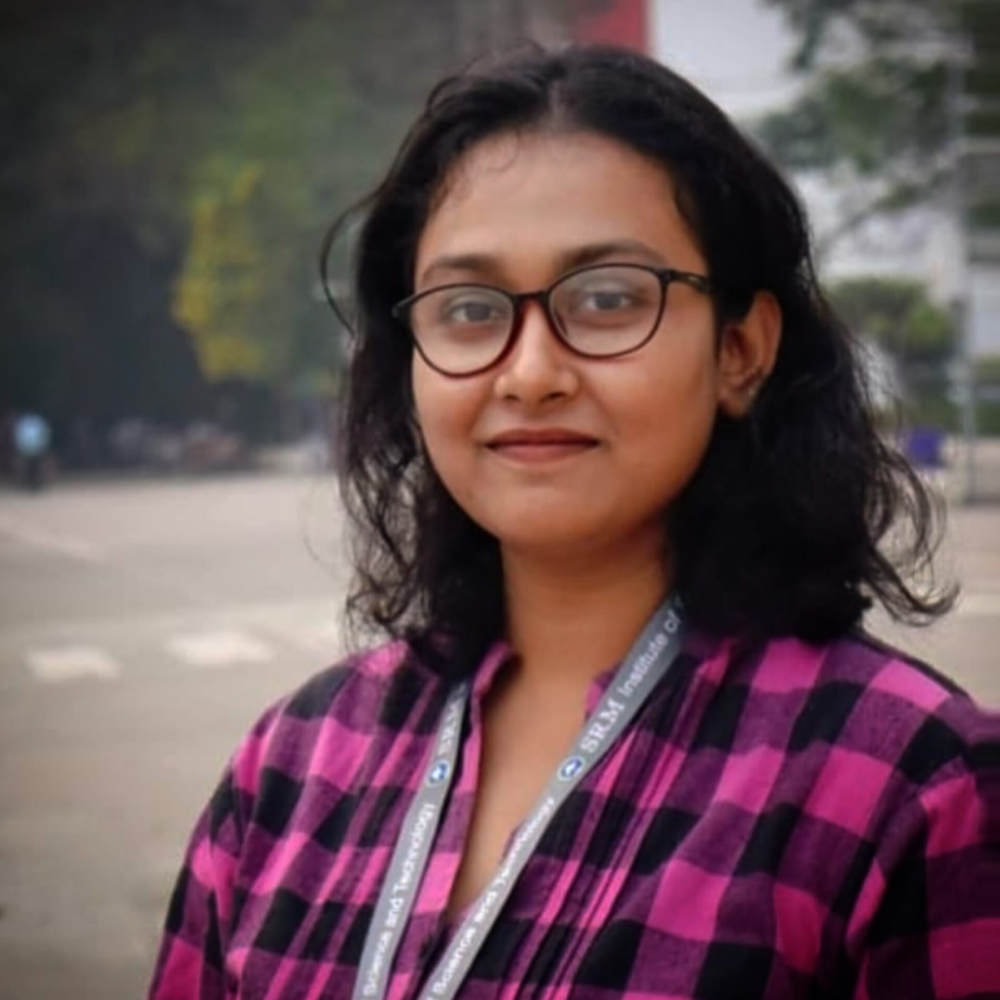

PhD Student
Moumita Dinda
PhD Student, T&CMC Research Group
Research Topic: Binder Guided Shaping of Metal-Organic Frameworks: Microscopic Design Principles for High-Performance H2 Storage.
Moumita Dinda received her M.Sc. in Applied Chemistry from Maulana Abul Kalam Azad University of Technology, West Bengal, in 2025. Her Ph.D. research focuses on computational materials chemistry and energy materials, with particular emphasis on the rational design of metal-organic frameworks for sustainable hydrogen storage.
She employs density functional theory, molecular dynamics, grand canonical Monte Carlo simulations, and machine learning to investigate hydrogen adsorption mechanisms, structure-property relationships, and the development of high-performance porous materials for clean energy applications. Her broader research experience also includes computational studies of metal-free perovskites and carbon allotropes, along with experimental work on visible-light-responsive photocatalysts for hydrogen peroxide production at IISc Bangalore.